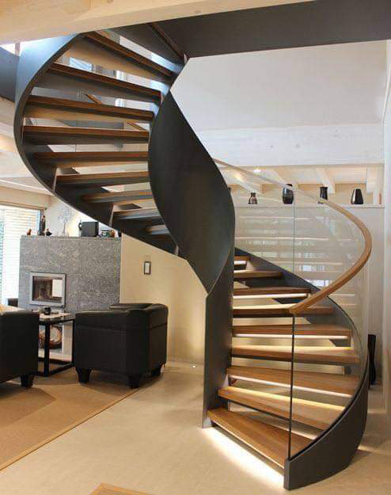
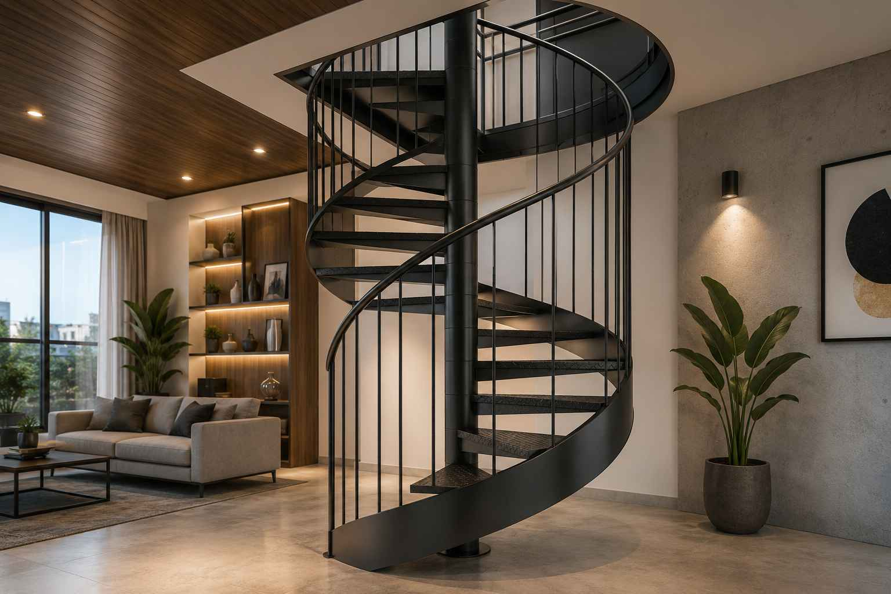
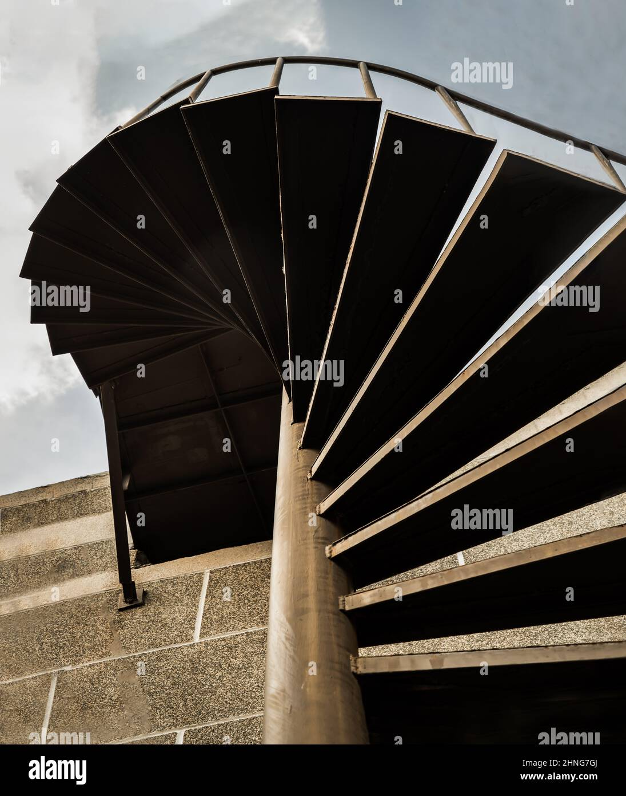
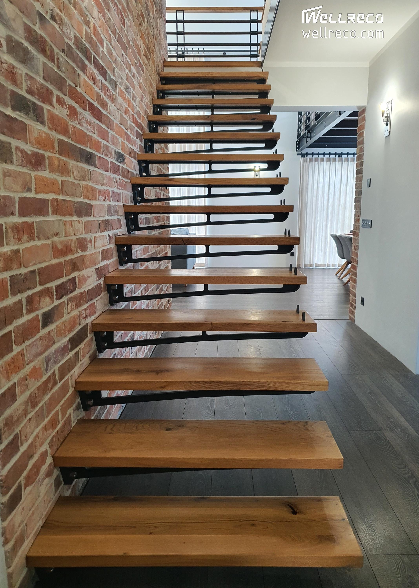
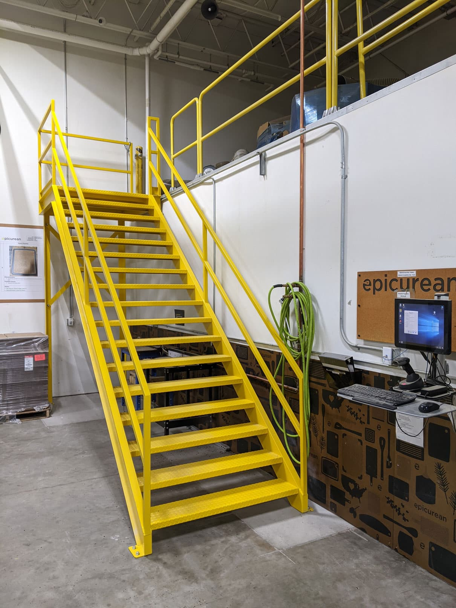
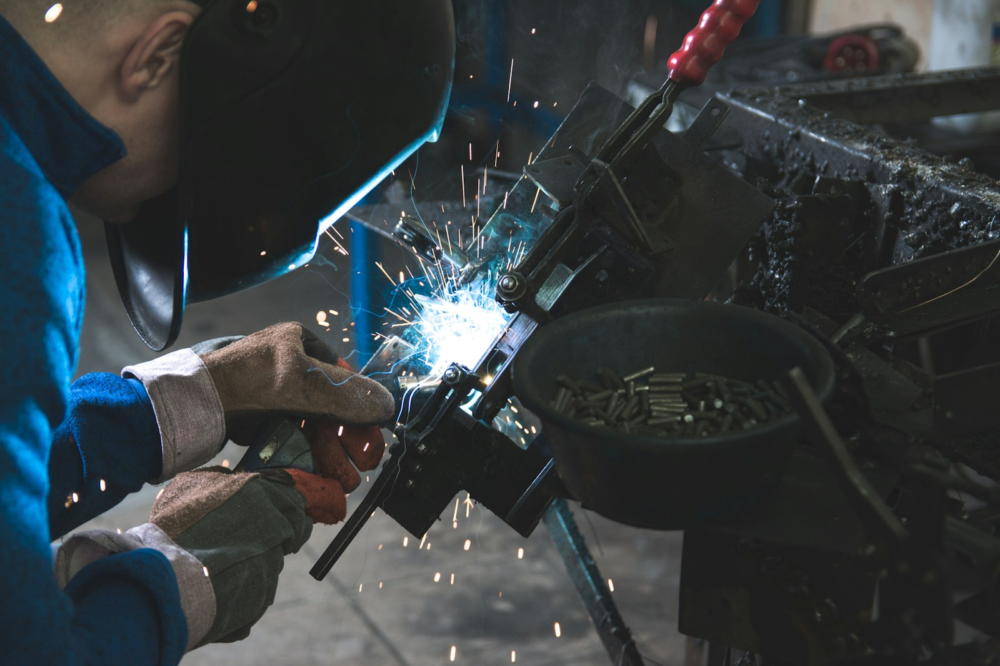
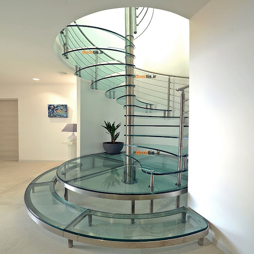
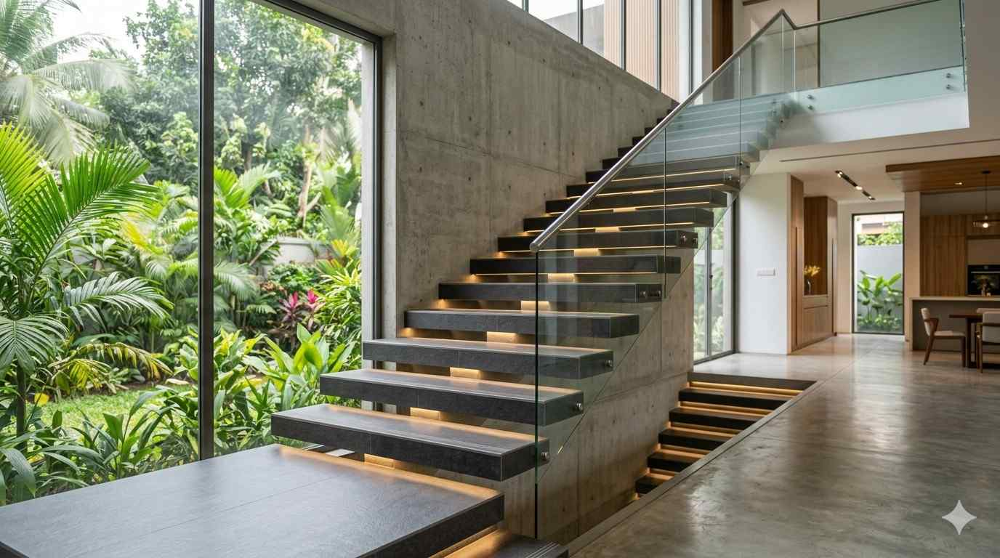
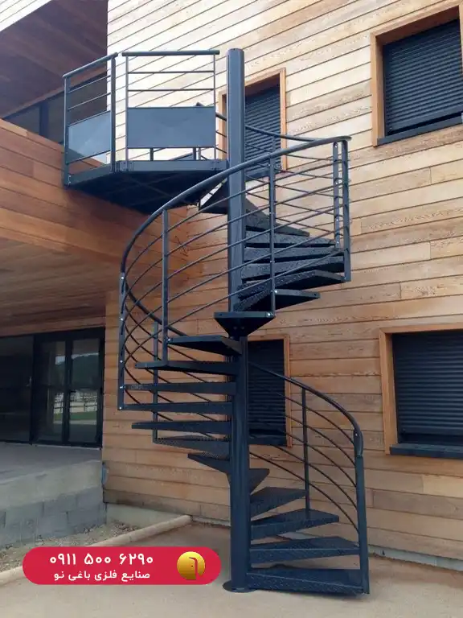

SF-01
01
پیچدار کلاسیک
پله مارپیچ با ستون مرکزی از ورق فولادی، مناسب فضاهای محدود و دوبلکس.
درخواست این مدلاز طراحی مهندسی تا ساخت در کارگاه مجهز و نصب حرفهای در محل — پلههای آهنی پیچدار و مارپیچ را با متریال درجه یک و تلورانس ±۰٫۵ میلیمتر تحویل میدهیم.

هر پروژه بر اساس نوع کاربری، فضای موجود و سلیقه مشتری با یکی از چهار سیستم استاندارد ما طراحی و اجرا میشود. تمام سیستمها قابل سفارشیسازی در ابعاد، رنگ و متریال هستند.

پله مارپیچ با ستون مرکزی از ورق فولادی، مناسب فضاهای محدود و دوبلکس.
درخواست این مدل
ساختار دو سرگرد با مقطع IPE و تیرآهن، ظرفیت بار بالا برای کاربری تجاری.
درخواست این مدل
پلههای بدون تیر ظاهری متصل به دیوار با کنسولهای فولادی، حس معلق و مدرن.
درخواست این مدل
پله مستقیم با تیر اصلی IPE و جانپناه فولادی، مناسب ورودی ساختمان و صنعتی.
درخواست این مدلتمام متریال با گواهی کیفیت کارخانه و تست میکرومتری ورودی وارد چرخه تولید میشوند. هر بچ تولید دارای پرونده ردیابی مواد اولیه است.
ورق و پروفیل استاندارد ساختمانی، مقاومت ۲۳۵ مگاپاسکال. مناسب محیط داخلی و رطوبت کنترلشده.
پوشش روی گرم جهت مقاومت در برابر خوردگی و زنگزدگی، ایدهآل برای فضای باز و مرطوب.
فولاد ضدزنگ با کروم و نیکل، انتخابی لاکچری برای ویلایی و دکوراتیو با پرداخت آینهای یا برسخورده.
روپوش پلکان از چوب جامبو با ضخامت ۴ سانتیمتر، رنگبندی و طرح customizable.
جانپناه و پاشنه از شیشه tempered لاکچری ۱۰+۱۰ میلیمتر لمینیت، امنیت و شفافیت کامل.
رنگآمیزی کورهای پودری در هر رنگ RAL با مقاومت بالا در برابر خراش و UV.
هر پروژه از لحظه عقد قرارداد تا تحویل کلید در دست در یک سامانه ردیابی آنلاین قابل پیگیری است. هیچ مرحلهای بدون تأیید مشتری پیش نمیرود.
بازدید از محل، اندازهگیری دقیق، طراحی سهبعدی در SolidWorks و ارائه نقشه اجرایی.
برش CNC پلاسما، خمکاری ستون، جوش زیرپودری و کنترل کیفیت میکرومتری.
سندبلاست SA 2.5، پرایمر اپوکسی و رنگآمیزی پودری الکترواستاتیک در کوره.
تیم نصب مجهز به جرثقیل و ابزار تخصصی، نصب و سطحبندی با لیزر در محل پروژه.
تست بار، تحویل پرونده فنی و کارت ضمانت ۱۰ ساله، پشتیبانی پس از فروش.

کارگاه ۸۰۰ متری مجهز به دستگاه CNC پلاسما، خمکار هیدرولیک و کوره رنگ پودری، با تیم بازرسی مستقل که مستقیماً به مدیریت فنی گزارش میدهد. هر پله قبل از خروج از کارگاه پنج مرحله کنترل کیفیت را طی میکند.
هر بچ فولاد با میکرومتر و اسپکترومتر تست میشود تا مطابقت با استاندارد ST-37 تأیید شود.
تلورانس برش و خمکاری در هر قطعه با کولیس دیجیتال ضبط میشود. حد پذیرش ±۰٫۵ میلیمتر.
تمام جوشهای حیاتی با اولتراسونیک تست پیوستگی میشوند تا از عدم ترک و تخلخل مطمئن شویم.
پله مونتاژشده با بار ۵۰۰ کیلوگرم تست میشود تا انعطاف و صدای قطعات کنترل شود.
بیش از ۵۰۰ پروژه در سراسر کشور، از ویلای خصوصی تا مجتمع تجاری. هر پروژه با کد ردیابی منحصر به فرد و کارت ضمانت ۱۰ ساله تحویل میشود.

پله مارپیچ سهطبقه با قطر ۱۸۰ سانتیمتر، ورق ۵ میل با روپوش چوب گردو.

پله کنسولی شناور با جانپناه شیشه سکوریت و نورپردازی مخفی LED.

دو ردیده پله مارپیچ صنعتی با ظرفیت بالا و رنگ الکترواستاتیک RAL 7016.
هر پله بر اساس ابعاد محل، سبک دکوراسیون و سلیقه شما طراحی میشود. هیچ پلهای از کاتالوگ آماده فروخته نمیشود.
۱۰۰٪ سفارشیفقط فولاد استاندارد ST-37 با گواهی کارخانه. هیچ متریال بازیافتی یا بدون استاندارد وارد کارخانه نمیشود.
ISO 2768-mKبرش CNC پلاسما با تلورانس ±۰٫۵ میلیمتر. قطعات قبل از نصب در کارگاه مونتاژ آزمایشی میشوند.
±۰٫۵mmهر پروژه با کارت ضمانت ۱۰ ساله ساخت و ۵ ساله رنگ تحویل میشود. خدمات پس از فروش در ۲۴ ساعت.
۱۰ سالفرم را پر کنید یا مستقیم تماس بگیرید. کارشناس فنی ما ظرف ۲۴ ساعت برای بازدید رایگان و ارائه پیشفاکتور هماهنگ میکند.